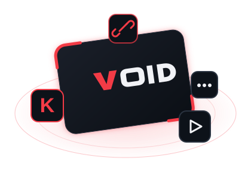

DISCORD BOT
VOID Discord Botu
Hawking Union sunucusunu yöneten Discord botu ve web yönetim paneli. Güvenlik ve AutoMod, oyun rolleri menüsü ve sunucu yönetimi tek yerde.
- Web yönetim paneli
- Güvenlik & AutoMod, raid koruması
- Oyun rolleri menüsü
Kick klip/VOD URL'sini veya klip ID'sini yapıştırın.

Kick klip veya VOD bağlantısını yapıştırarak indirmeye başlayabilirsin.
Tamamlanan ve hata veren indirmeler burada tutulur. Kuyruktaki "Temizle" geçmişi silmez.
Henüz tamamlanmış indirme yok.
Kick klip ve yayın kayıtlarını (VOD) istediğin kalitede, hızlıca indirmek için geliştirilen sade ve güçlü masaüstü uygulaması.
Hawking Union sunucusunu yöneten Discord botu ve web yönetim paneli. Güvenlik ve AutoMod, oyun rolleri menüsü ve sunucu yönetimi tek yerde.
Kick yayıncıları için Türkçe sohbet botu. Oyunlar, puan ekonomisi, moderasyon ve duyurular tek panelden yönetilir; Discord botuyla aynı VOID ailesinde ama ayrı çalışır.
Yalnızca erişim hakkın olan içerikleri indir; Kick'in kullanım koşullarına ve içerik sahiplerinin haklarına saygı göster. Uygulama erişim kontrollerini aşmaya çalışmaz. Kick'in resmî olmayan uçları kullanıldığı için Kick değişirse bazı özellikler çalışmayabilir.